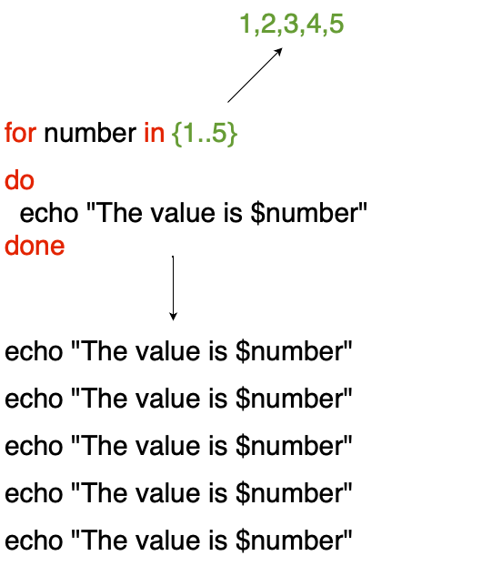
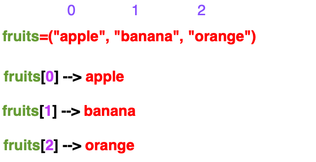
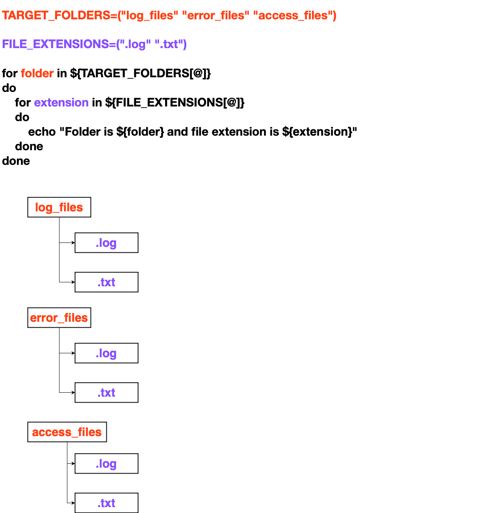

Part 2
Youtube¶
What is for loop ?¶
for loop is used to repeat the task until the limit is reached or iterate through the items

In the above diagram {1..5} changes to 1,2,3,4,5 which means the for loop is going to repeat the command execution 5 times.
The commands will be placed inside do, done block
So, the echo command is going to repeat 5 times echo "The value is $number"
To clone the shellscript git repo
[opc@new-k8s ~]$ git clone https://github.com/vigneshsweekaran/shellscript.git
Cloning into 'shellscript'...
remote: Enumerating objects: 78, done.
remote: Counting objects: 100% (78/78), done.
remote: Compressing objects: 100% (70/70), done.
remote: Total 78 (delta 13), reused 56 (delta 5), pack-reused 0
Unpacking objects: 100% (78/78), done.
[opc@new-k8s shellscript]$ ll
total 4
drwxrwxr-x. 4 opc opc 94 May 5 12:03 automation
-rw-rw-r--. 1 opc opc 13 May 5 12:03 README.md
drwxrwxr-x. 5 opc opc 50 May 6 10:04 tutorials
[opc@new-k8s shellscript]$ cd tutorials/part-2
[opc@new-k8s part-2]$ cat 1-for-loop.sh
#!/bin/bash
for number in {1..5}
do
echo "The value is $number"
done
[opc@new-k8s part-2]$ ./1-for-loop.sh
The value is 1
The value is 2
The value is 3
The value is 4
The value is 5
How to create multiple files using shell script¶
We have used date command, which prints both date and time
[opc@new-k8s part-2]$ date
Sat May 6 12:54:11 GMT 2023
Lets format the date command to get the details in this format MMDDYY-HHMMSS
[opc@new-k8s part-2]$ date +"%m%d%y-%H%M%S"
050623-125855
%m --> Month
%d --> Day
%y --> Year (Last two digit)
%H --> Hour
%M --> Minutes
%S --> Seconds
Now lets run the script
[opc@new-k8s part-2]$ cat 2-create-multiple-files.sh
#!/bin/bash
set -e
for number in {1..5}
do
VERSION=$(date +"%m%d%y-%H%M%S")
DATE=$(date)
FILE_NAME=app-${VERSION}-${number}.log
touch $FILE_NAME
echo "File created on ${DATE}" > $FILE_NAME
done
currently we have 6 shellscript files here
[opc@new-k8s part-2]$ ll
total 24
-rwxrwxr-x. 1 opc opc 82 May 7 23:22 1-for-loop.sh
-rwxrwxr-x. 1 opc opc 216 May 7 23:22 2-create-multiple-files.sh
-rwxrwxr-x. 1 opc opc 151 May 7 23:22 3-iterate-through-items.sh
-rwxrwxr-x. 1 opc opc 200 May 7 23:22 4-delete-files-more-than-x-size.sh
-rwxrwxr-x. 1 opc opc 427 May 7 23:22 5-delete-files-more-than-x-days.sh
-rwxrwxr-x. 1 opc opc 396 May 7 23:22 6-store-cli-version-in-json-file.sh
[opc@new-k8s part-2]$ ./2-create-multiple-files.sh
[opc@new-k8s part-2]$ ll
total 44
-rwxrwxr-x. 1 opc opc 82 May 7 23:22 1-for-loop.sh
-rwxrwxr-x. 1 opc opc 216 May 7 23:22 2-create-multiple-files.sh
-rwxrwxr-x. 1 opc opc 151 May 7 23:22 3-iterate-through-items.sh
-rwxrwxr-x. 1 opc opc 200 May 7 23:22 4-delete-files-more-than-x-size.sh
-rwxrwxr-x. 1 opc opc 427 May 7 23:22 5-delete-files-more-than-x-days.sh
-rwxrwxr-x. 1 opc opc 396 May 7 23:22 6-store-cli-version-in-json-file.sh
-rw-rw-r--. 1 opc opc 45 May 7 23:28 app-050723-232815-1.log
-rw-rw-r--. 1 opc opc 45 May 7 23:28 app-050723-232815-2.log
-rw-rw-r--. 1 opc opc 45 May 7 23:28 app-050723-232815-3.log
-rw-rw-r--. 1 opc opc 45 May 7 23:28 app-050723-232815-4.log
-rw-rw-r--. 1 opc opc 45 May 7 23:28 app-050723-232815-5.log
After running the shellscript it has created the 5 new files, the name includes the version created from the date command
[opc@new-k8s part-2]$ cat app-050723-232815-1.log
File created on Sun May 7 23:28:15 GMT 2023
When we cat the first file, it has the timestamp, which we have written to the file
Array in shellscript¶
Array is a collection of items

Check the size of multiple directory using for loop¶
du command is used to check the size of file or directory
TO check the size of file
[opc@new-k8s part-2]$ du -sh /tmp/files/apache-maven-3.9.1-bin.tar.gz
8.7M /tmp/files/apache-maven-3.9.1-bin.tar.gz
To check the size of directory
[opc@new-k8s part-2]$ ll -sh /tmp/files
total 82M
8.7M -rw-rw-r--. 1 opc opc 8.7M May 7 11:49 access.log
8.7M -rw-rw-r--. 1 opc opc 8.7M May 7 11:49 apache.log
8.7M -rw-rw-r--. 1 opc opc 8.7M May 7 11:49 apache-maven-3.9.1-bin.tar.gz
4.0K -rw-rw-r--. 1 opc opc 11 May 7 11:49 error.log
8.7M -rw-rw-r--. 1 opc opc 8.7M May 7 11:49 hello.txt
47M -rw-rw-r--. 1 opc opc 47M May 7 11:49 kubectl
[opc@new-k8s part-2]$ du -sh /tmp/files
82M /tmp/files
[opc@new-k8s part-2]$ cat 3-iterate-through-items.sh
#!/bin/bash
set -e
TARGET_FOLDERS=("log_files" "error_files" "access_files")
for folder in ${TARGET_FOLDERS[@]}
do
du -sh "/tmp/${folder}"
done
In the above script, we created a variable TARGET_FOLDERS of type array and stored some folder names
Using for loop we can check the size of all the folders in the array TARGET_FOLDERS using du command
Lets check the files in access_files, error_files, log_files folders
[opc@new-k8s part-2]$ ll /tmp/access_files/
total 8
-rw-rw-r--. 1 opc opc 0 May 7 11:50 access1.txt
-rw-rw-r--. 1 opc opc 0 May 7 11:50 access2.txt
-rw-rw-r--. 1 opc opc 22 May 8 11:19 access.log
-rw-rw-r--. 1 opc opc 0 May 7 11:51 access_new.log
-rw-rw-r--. 1 opc opc 17 May 8 11:19 access.txt
-rw-rw-r--. 1 opc opc 0 May 7 11:50 test.txt
[opc@new-k8s part-2]$ ll /tmp/error_files/
total 0
-rw-rw-r--. 1 opc opc 0 May 7 11:51 access1.txt
-rw-rw-r--. 1 opc opc 0 May 7 11:51 access2.txt
-rw-rw-r--. 1 opc opc 0 May 7 11:51 access.log
-rw-rw-r--. 1 opc opc 0 May 7 11:51 access_new.log
-rw-rw-r--. 1 opc opc 0 May 7 11:51 access.txt
-rw-rw-r--. 1 opc opc 0 May 7 11:51 test.txt
[opc@new-k8s part-2]$ ll /tmp/log_files/
total 4
-rw-rw-r--. 1 opc opc 0 May 7 11:51 access1.txt
-rw-rw-r--. 1 opc opc 0 May 7 11:51 access2.txt
-rw-rw-r--. 1 opc opc 0 May 7 11:51 access.log
-rw-rw-r--. 1 opc opc 0 May 7 11:51 access_new.log
-rw-rw-r--. 1 opc opc 21 May 8 10:59 access.txt
-rw-rw-r--. 1 opc opc 0 May 7 11:51 test.txt
Running the shellscript
[opc@new-k8s part-2]$ ./3-iterate-through-items.sh
8.0K /tmp/log_files
4.0K /tmp/error_files
12K /tmp/access_files
How to delete the files which are more than x size¶
In the find command, you can pass the argument -size to set the target size of the file and pass -delete to delete the files, if the target size is matched.
[opc@new-k8s files]$ pwd
/tmp/files
[opc@new-k8s files]$ ll -h
total 82M
-rw-rw-r--. 1 opc opc 8.7M May 7 11:49 access.log
-rw-rw-r--. 1 opc opc 8.7M May 7 11:49 apache.log
-rw-rw-r--. 1 opc opc 8.7M May 7 11:49 apache-maven-3.9.1-bin.tar.gz
-rw-rw-r--. 1 opc opc 11 May 7 11:49 error.log
-rw-rw-r--. 1 opc opc 8.7M May 7 11:49 hello.txt
-rw-rw-r--. 1 opc opc 47M May 7 11:49 kubectl
Here, you can see, the *.log files size are 8.7 MB, you can run the below command to delete the files, which matches the file extension and size
find ./ -type f -name "*.log" -size +8M -delete
[opc@new-k8s files]$ find ./ -type f -name "*.log" -size +8M -delete
[opc@new-k8s files]$ ll -h
total 65M
-rw-rw-r--. 1 opc opc 8.7M May 7 11:49 apache-maven-3.9.1-bin.tar.gz
-rw-rw-r--. 1 opc opc 11 May 7 11:49 error.log
-rw-rw-r--. 1 opc opc 8.7M May 7 11:49 hello.txt
-rw-rw-r--. 1 opc opc 47M May 7 11:49 kubectl
Only the files, which matches "*.log" extension and size more than 8MB are deleted
Lets run the shellscript to delete the files in folder
[opc@new-k8s part-2]$ cat 4-delete-files-more-than-x-size.sh
#!/bin/bash
set -e
TARGET_PATH="/tmp/files"
FILE_EXTENSION=".log"
TARGET_FILE_SIZE="1k" #Eg: 10K, 100M, 1GB
find ${TARGET_PATH} -type f -name "*${FILE_EXTENSION}" -size +${TARGET_FILE_SIZE} -delete
Now lets delete the "*.gz" file, which has size more than 1KB
[opc@new-k8s part-2]$ ./4-delete-files-more-than-x-size.sh
[opc@new-k8s part-2]$ ll -h /tmp/files
total 56M
-rw-rw-r--. 1 opc opc 11 May 8 11:44 error.log
-rw-rw-r--. 1 opc opc 8.7M May 8 11:44 hello.txt
-rw-rw-r--. 1 opc opc 47M May 8 11:44 kubectl
We had only one "*.gz" file, which is also more than 1KB, so it got deleted
for loop inside another for loop¶

How to delete files in multiple folders having multiple file extensions¶
Using find command you can identity the files, which are created, modified, accessed some time, days back
-mtime --> modified time of file (in days)
-ctime --> created time of file (in days)
-atime --> accessed time of file (in days)
-mmin --> modified time of file (in minutes)
By default, ls -l or ll command shows the modified time of a file
[opc@new-k8s part-2]$ ll /tmp/access_files/
total 8
-rw-rw-r--. 1 opc opc 0 May 7 11:50 access1.txt
-rw-rw-r--. 1 opc opc 0 May 7 11:50 access2.txt
-rw-rw-r--. 1 opc opc 22 May 8 11:19 access.log
-rw-rw-r--. 1 opc opc 0 May 7 11:51 access_new.log
-rw-rw-r--. 1 opc opc 17 May 8 11:19 access.txt
-rw-rw-r--. 1 opc opc 0 May 7 11:50 test.txt
[opc@new-k8s part-2]$ ll /tmp/error_files/
total 0
-rw-rw-r--. 1 opc opc 0 May 7 11:51 access1.txt
-rw-rw-r--. 1 opc opc 0 May 7 11:51 access2.txt
-rw-rw-r--. 1 opc opc 0 May 7 11:51 access.log
-rw-rw-r--. 1 opc opc 0 May 7 11:51 access_new.log
-rw-rw-r--. 1 opc opc 0 May 7 11:51 access.txt
-rw-rw-r--. 1 opc opc 0 May 7 11:51 test.txt
[opc@new-k8s part-2]$ ll /tmp/log_files/
total 4
-rw-rw-r--. 1 opc opc 0 May 7 11:51 access1.txt
-rw-rw-r--. 1 opc opc 0 May 7 11:51 access2.txt
-rw-rw-r--. 1 opc opc 0 May 7 11:51 access.log
-rw-rw-r--. 1 opc opc 0 May 7 11:51 access_new.log
-rw-rw-r--. 1 opc opc 21 May 8 10:59 access.txt
-rw-rw-r--. 1 opc opc 0 May 7 11:51 test.txt
[opc@new-k8s part-2]$ cat 5-delete-files-more-than-x-days.sh
#!/bin/bash
set -e
TARGET_PATH="/tmp"
TARGET_FOLDERS=("log_files" "error_files" "access_files")
FILE_EXTENSIONS=(".log" ".txt")
TARGET_TIME_IN_MINUTES="1"
for folder in ${TARGET_FOLDERS[@]}
do
for extension in ${FILE_EXTENSIONS[@]}
do
echo "Deleting file extension ${extension} in folder ${folder}"
find ${TARGET_PATH}/${folder} -type f -name "*${extension}" -mmin +${TARGET_TIME_IN_MINUTES} -delete
done
done
The script will delete the files, which are modified 1 minute ago (It can be anytime before 1 minute)
[opc@new-k8s part-2]$ ./5-delete-files-more-than-x-days.sh
Deleting file extension .log in folder log_files
Deleting file extension .txt in folder log_files
Deleting file extension .log in folder error_files
Deleting file extension .txt in folder error_files
Deleting file extension .log in folder access_files
Deleting file extension .txt in folder access_files
[opc@new-k8s part-2]$ ll /tmp/access_files/
total 0
[opc@new-k8s part-2]$ ll /tmp/error_files/
total 0
[opc@new-k8s part-2]$ ll /tmp/log_files/
total 0
Since the files are modified sometime long back, all the files with extension ".log and .txt are deleted"
How to get the version of the tools and store in json file¶
Lets get the version of two tools git and maven
To check the version of git
[opc@new-k8s part-2]$ git --version
git version 1.8.3.1
But it gives, some additional words right, you can use awk command to get only the 3rd column, which returns the version
[opc@new-k8s part-2]$ git --version | awk '{ print $3 }'
1.8.3.1
Similarly you can get the version of maven using mvn --version command
[opc@new-k8s part-2]$ mvn --version
Apache Maven 3.0.5 (Red Hat 3.0.5-17)
Maven home: /usr/share/maven
Java version: 1.8.0_362, vendor: Red Hat, Inc.
Java home: /usr/lib/jvm/java-1.8.0-openjdk-1.8.0.362.b08-1.el7_9.aarch64/jre
Default locale: en_US, platform encoding: UTF-8
OS name: "linux", version: "5.4.17-2102.202.5.el7uek.aarch64", arch: "aarch64", family: "unix"
Interesting, it returns 6 lines. But you want only version, which is in first line
You can use grep or head command to get only the first line
[opc@new-k8s part-2]$ mvn --version | grep "Apache Maven"
Apache Maven 3.0.5 (Red Hat 3.0.5-17)
Now, you can use the awk command to get the version
[opc@new-k8s part-2]$ mvn --version | grep "Apache Maven" | awk '{ print $3 }'
3.0.5
Awesome, lets run the shellscript to get the version and write to version.json file
#!/bin/bash
set -e
GIT_VERSION=$(git --version | awk '{print $3}')
MAVEN_VERSION=$(mvn --version | grep "Apache Maven" | awk '{print $3}')
FILE_NAME="version.json"
echo "{}" > $FILE_NAME
echo "$(jq --arg git_version "$GIT_VERSION" '. += {"git": $git_version}' $FILE_NAME)" > $FILE_NAME
echo "$(jq --arg maven_version "$MAVEN_VERSION" '. += {"maven": $maven_version}' $FILE_NAME)" > $FILE_NAME
[opc@new-k8s part-2]$ ./6-store-cli-version-in-json-file.sh
[opc@new-k8s part-2]$ cat version.json
{
"git": "1.8.3.1",
"maven": "3.0.5"
}